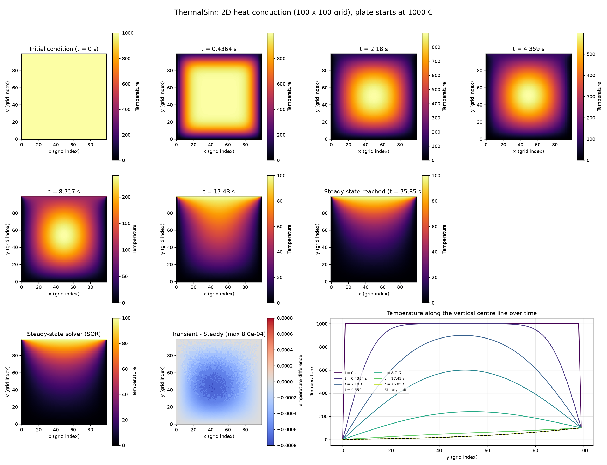

1. Physics Foundations
Fourier's law, conservation of thermal energy, and the 2D Heat Equation
1.1 Fourier's Law of Heat Conduction
Fourier's law states that the local conductive heat flux density $\mathbf{q}$ ($\text{W/m}^2$) in an isotropic medium is directly proportional to the negative local temperature gradient $\nabla T$:
Here, $k$ ($\text{W/m}\cdot\text{K}$) denotes the material's thermal conductivity. The negative sign ensures thermal energy flows spontaneously from regions of higher temperature toward regions of lower temperature in accordance with the Second Law of Thermodynamics.
1.2 Conservation of Energy & The 2D Heat PDE
For an infinitesimal control volume with mass density $\rho_m$ ($\text{kg/m}^3$) and specific heat capacity $c_p$ ($\text{J/kg}\cdot\text{K}$) without internal heat generation, the rate of internal thermal energy change equals the net conductive heat flux entering the volume:
Dividing by volumetric heat capacity $\rho_m c_p$ defines the thermal diffusivity $\alpha = \frac{k}{\rho_m c_p}$ ($\text{m}^2/\text{s}$), yielding the 2D transient parabolic heat equation:
Steady-State Limit: As $t \to \infty$, thermal equilibrium is reached ($\frac{\partial T}{\partial t} = 0$). The parabolic PDE collapses into Laplace's Elliptic Equation ($\nabla^2 T = 0$), which becomes strictly independent of material properties $\alpha$.
Dirichlet Boundary Conditions
The $L \times L$ ($0.1\text{ m} \times 0.1\text{ m}$) plate is initialized at uniform temperature $T(x,y,0) = T_0$, while the four edges are clamped to fixed isothermal reservoirs:
- Top ($y = L$): $T_{N-1, j} = T_{\text{top}}$
- Bottom ($y = 0$): $T_{0, j} = T_{\text{bottom}}$
- Left ($x = 0$): $T_{i, 0} = T_{\text{left}}$
- Right ($x = L$): $T_{i, N-1} = T_{\text{right}}$
Perceptually Uniform Heat Maps
The Python visualizer maps the discrete $100 \times 100$ scalar temperature matrix $T_{i,j}$ using Matplotlib's perceptually uniform Inferno colormap:
2. Numerical Schemes & Stability
FTCS explicit time-stepping, Courant-Friedrichs-Lewy (CFL) stability, and SOR verification
2.1 Forward-Time Central-Space (FTCS) Discretization
Discretizing time with step $\Delta t$ ($t^n = n\Delta t$) using a first-order forward difference $\mathcal{O}(\Delta t)$, and space with uniform grid spacing $h = \Delta x = \Delta y = \frac{L}{N-1}$ using second-order central differences $\mathcal{O}(h^2)$:
Defining the dimensionless mesh Fourier number $r = \frac{\alpha \Delta t}{h^2}$, we isolate the next timestep temperature $T_{i,j}^{n+1}$:
2.2 Von Neumann Stability & Critical Timestep
Explicit time-marching schemes are conditionally stable. Rewriting the FTCS update at the center node gives a coefficient of $(1 - 4r)$ on $T_{i,j}^n$. To prevent non-physical checkerboard oscillations and exponential error amplification, the coefficient must remain non-negative:
Thermalism enforces a $10\%$ safety margin ($\Delta t = 0.9 \, \Delta t_{\max}$, yielding $r = 0.225$), guaranteeing monotonic stability across all materials while maximizing step size.
2.3 Dual-Solver Cross-Verification (FTCS vs. SOR)
1. Transient FTCS Time-Marching
Time-AccurateAdvances physical time $t$ step-by-step until the maximum instantaneous heating/cooling rate across the entire plate drops below tolerance $\epsilon = 10^{-5}\text{ K/s}$:
2. Steady-State SOR Solver
$\omega = 1.85$Independently solves Laplace's equation ($\nabla^2 S = 0$) using Successive Over-Relaxation to verify that the asymptotic transient state $T(t_{\text{final}})$ matches exact equilibrium $S$:
3. Material Properties & Characteristic Timescale
Built-in thermophysical constants and Fourier mode snapshot scheduling
3.1 Characteristic Thermal Diffusion Time ($\tau$)
By separation of variables on a square plate of side $L = 0.1\text{ m}$, the fundamental $(1,1)$ spatial Fourier eigenmode decays exponentially as $e^{-t/\tau}$. Thermalism uses $\tau$ to dynamically schedule non-uniform snapshot timestamps regardless of whether the plate is fast-conducting Copper or slow-conducting Stainless Steel:
Because $\tau \propto \alpha^{-1}$, snapshots cluster densely during early boundary-layer penetration ($0.1\tau, 0.5\tau$) and space out exponentially as the plate approaches asymptotic equilibrium ($4.0\tau \rightarrow t_{\text{final}}$).
3.2 Built-in Engineering Materials ($L = 0.1\text{ m}, \; 100 \times 100$ Grid)
| Material | $k$ ($\text{W/m}\cdot\text{K}$) | $\rho_m$ ($\text{kg/m}^3$) | $c_p$ ($\text{J/kg}\cdot\text{K}$) | $\alpha$ ($\text{m}^2/\text{s}$) | $\tau$ (s) |
|---|---|---|---|---|---|
| Copper | 401.0 | 8960 | 385 | $1.162 \times 10^{-4}$ | 4.36 s |
| Aluminium | 237.0 | 2700 | 897 | $9.786 \times 10^{-5}$ | 5.18 s |
| Brass | 109.0 | 8500 | 380 | $3.375 \times 10^{-5}$ | 15.01 s |
| Iron | 80.0 | 7870 | 447 | $2.274 \times 10^{-5}$ | 22.28 s |
| Stainless Steel | 16.0 | 8000 | 500 | $4.000 \times 10^{-6}$ | 126.65 s |
4. Computational Pipeline & Sample Output
End-to-end execution workflow and multi-timestamp plate evolution
Domain & Dirichlet Boundary Setup
Initialize $100 \times 100$ mesh nodes to $T_0$ and enforce isothermal boundary temperatures $(T_{\text{top}}, T_{\text{bottom}}, T_{\text{left}}, T_{\text{right}})$ on outer matrix edges.
FTCS Transient Marching & Snapshot Capture
Advance time using $\Delta t = 0.9 \frac{h^2}{4\alpha}$, recording full temperature grids at $t = \{0, 0.1\tau, 0.5\tau, 1.0\tau, 2.0\tau, 4.0\tau\}$ until $\max |\partial T/\partial t| < 10^{-5}$.
SOR Steady-State Cross-Check & CSV Export
Solve $\nabla^2 S = 0$ via SOR ($\omega = 1.85$), verify maximum discrepancy $\max |T_{\text{final}} - S|$, and write node coordinates plus all time-series snapshots to output.csv.
Automated Matplotlib Diagnostic Grid
Invoke visualizer.py automatically via system call to render the multi-panel heatmap evolution, SOR comparison, residual error map, and vertical centerline temperature profiles.
Sample Simulation Output (sample.png)
Multi-panel diagnostic plot showing transient plate evolution across timestamps ($t=0 \rightarrow t_{\text{final}}$), SOR steady-state benchmark, residual difference map, and centerline thermal profiles.

Explore Code Implementation
View thermalsim.cpp, visualizer.py, and sample datasets on GitHub.